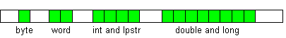

Variables are used to temporarily store numbers, text and other data. The data can be changed. Variables can be passed to macro commands and functions as arguments.
Before using a variable, need to declare it (except predefined variables). Variable declaration includes type and name. The mostly used variable types are int (for numeric integer values), str (for strings) and double (for numeric floating-point values). Name can consist of characters A-Z, a-z, 0-9 and _, and cannot begin with a digit. In the following example, we declare variable i of type int, variable S3 of type str, and variable _a of type double. Then we assign some values:
int i; str S3; double _a i=5 S3="text" _a=15.477
QM has 7 intrinsic variable types: byte, word, int, long, double, lpstr, str. QM also has 7 OLE-Automation variable types (including arrays) and defines several other types. More types can be defined with type, class and interface statements, or in type libraries. The table shows properties of intrinsic variable types, and how they are related to C++ and C# variable types:
| Type | byte | word | int | long | double | lpstr | str |
| Numeric | Yes | Yes | Yes | Yes | Yes | ||
| String | Yes | Yes | |||||
| Integer | Yes | Yes | Yes | Yes | |||
| Signed | Yes | Yes | Yes | ||||
| Size (bytes) | 1 | 2 | 4 | 8 | 8 | 4 | 16 + string |
| Character | ! | @ | # | % | ^ | $ | ~ |
| Min | 0 | 0 | -2147483648 | -2^63 | |||
| Max | 255 | 65535 | 2147483647 | 2^63 - 1 | |||
| C++ | BYTE, char |
WORD, short |
int, long, DWORD, UINT, HWND, etc |
__int64 | double | LPSTR, char* |
similar to CString |
| C# | byte | ushort | int | long | double | similar to string |
The picture shows how variables of different types are stored in memory. Green squares represent bytes occupied by a variable of the specified type.

See also: declaration storage and scope more types of storage predefined variables user-defined types strings OLE types and other predefined types safe arrays conversions, etc.
Usage: expressions operators functions strings pointers